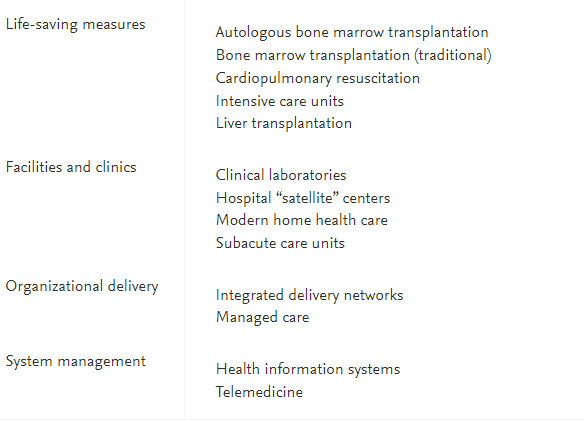
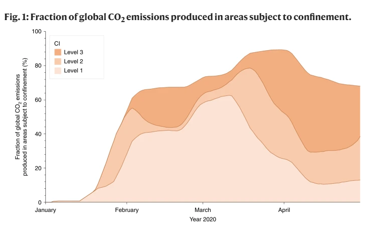

Impacts of Technology to Environment and Society/Economy
By Prince James P. Cauilan · BSIT 1-2 · July 17, 2023
Over the years, we saw how technology has become a huge part of our lives, even the simplest task we can do is now being done with the help of technology. Every person in the world must have at least one experience using technology in their daily life, whether it is for school work, workplace, or simply spending a normal day at home. As a first year student attending Cavite State University Gen. Trias City Campus, I can confirm that I use computer technology in order to complete various tasks, applying to the university’s admission, gathering information from my classmates or professor, and creating and submitting tasks. That’s only an example of what technology I use as a student, however if we want to see the effect of technology we need to consider all of the people from different working fields and institutions. So, let’s look at the technological advancement in today’s life and how it affects our environment and some of the major components of our society. And examine all of the possible effect of technology both positive and negative.
Educational technology, education has become more accesible to everyone especially for those who have gadgets and internet. Because of the pandemic, felxible learning was implemented by the Commission on Higher Education under CHED memorandum No. 4. They provided various learning modalities such as offline, blened, and online learning and teaching. Offline learning modality uses mostly printed modules, television or radio broadcasting networks technology and online learning modality uses desktop computer, laptop, smarthpone, mobile applications or computer technology. While blended learning modality uses a combination of both. Broadcasting of learning modules through television and radio known as DepEd TV were created by the Department of Education with the Assistance of the Presedential Communications Operations Office (PCOO). In addition, access to information or other online resources (videos, blogs, forum) and books or physical media has been easier. With that being said, according to the article’s Teaching and Learning Continuity Amid and Beyond the Pandemic 2021 results and discussion, students find that the learning activities were not flexible enough to be done either offline or online as they could not comply within the requirements within the expected schedule. As shown in the table below from the article.
Not only that, majority of the students reported that they were unable to accomplish the tasks assigned by the teachers due to their inability to access the internet or use suitable gadgets to finish the tasks. As shown in the table below from the article.
To summarize, the various learning modalities are provided to continue the nation’s teaching and learning amidst the pandemic. It is also shown that students access to internet or gadgets could play an important role in their learning. Students inability to access such things will have no choice but to learn under the offline learning modality and therefore they will be limited to printed modules, television or radio broadcasting networks technology in their learning.

Medical Technology, defined by The New Public Health (Third Edition), 2014 as the application of science to develop solutions to health problems or issues such as the prevention or delay of onset of diseases or the promotion and monitoring of good health. Besides education, health or health care is also an important sector of society. A society wouldn’t be successful if everyone has an illness or sick. The health of everyone must be considered in order to run a properly functioning society. We are fortunate that Health care is also affected with the advancement of technology and as a result, we are currently benefiting from the advancements and receiving the best care that can be provided. According to Jahangir Moini in Health Care Today in the United States, 2023, Technological advancements have provided less-invasive surgeries, created more effective treatments for cancer, controlled infection better than before, and aided in healthier pregnancies and deliveries. And also, according to the book’s Table 1.2, it shows a lists examples of medical technologies, all of which are continually developing and advancing.

However, we must keep in mind that these medical technology are only accessible to those who have money. According to (Jaymalin, 2019, p. 3) 40 percent of 1,350 respondents from various parts of our country expressed uncertainty on their capability to pay medical bills. This means that most of the technological advancement in health care are not within reach by most Filipinos.
As can be seen, health care along with education is also affected by the advancement of technology. In return, we as a part of the society are benefiting by being provided the best health care we can get with the aid of technology only for those who have high or upple middle income.
Accroding to Knowledge, Technology and Complexity in Economic Growth, in economics, it is widely accepted that technology is the key driver of economic growth of countries, regions and cities. This is because of the manufacturing technology, it allows for more efficient production and better goods and services and in shorter amount of time in comparison to manual labor. According to (Okafor, 2020) on Negative Impact of Technology on the Environment, the manufacturing technology uses massive energy to turn the raw materials into the complex electronic or technological products that we use and not only that, the transportation of these products worldwide, by planes and automobiles, also contributes to the greenhouse effect responsible for global warming and air pollution. We can see that transportation is a big contributing factor in global warming and air pollution because according to National Aeronautics and Space Administration (NASA) article Emission Reductions From Pandemic Had Unexpected Effects on Atmosphere, The COVID-19 pandemic and resulting limitations on travel and other economic sectors by countries around the globe drastically decreased air pollution and greenhouse gas emissions within just a few weeks.

And according to the same article, technology is mineral intensive that on average, around 35 different materials are used in smarthphone. One material is plastic, the second most used material after silicon. All of these materials are mined resulting to depletion of natural resources.

To sum up, technology is a key driving factor in economy but it is also a huge contributor to the greenhouse effect responsible for global warming and air pollution.
Lastly, the use of technology in other parts of our daily lives may not be as apparent because we are so used to it and forget that it is actually done through the use of technology such as gathering information online or from a book, communicating with other people through our smarthpones or just a mobile phone, playing games, watching movies or shows, and every other object we see must have been under some type of technology to get that final product.

In conclustion, technology has become an integral part of our lives. It has a great impact in our education, healthcare, environment, the economy and in our everyday activities. It has made education more accessible but mostly for those who have access to internet and gadgets. It provided a better healthcare, but accessibility still remains an issue for most. It is also a key driving factor for economic growth but also contributes to environmental issues. Overall, technology has revolutionized the way we live, work, and communicate, shaping our society in both positive and negative ways.
Works Cited
Wikipedia contributors. (2023). DepEd TV. Wikipedia. https://en.wikipedia.org/wiki/DepEd_TV
Jaymalin, M. (2019, June 26). Many Pinoys can’t afford hospital bills – study. Philstar.com. https://www.philstar.com/headlines/2019/06/27/1929966/many-pinoys-cant-afford-hospital-billsstudy
Knowledge, technology and complexity in economic growth. (n.d.). Real Colegio Complutense. https://rcc.harvard.edu/knowledge-technology-and-complexity-economic-growth
Okafor, J. (2022). Negative impact of technology on the environment. TRVST. https://www.trvst.world/environment/negative-impact-of-technology-on-theenvironment/#:~:text=Massive%20Energy%20Use%20%26%20Carbon%20Footprint&text=Man ufacturers%20require%20massive%20energy%20to,global%20warming%20and%20air%20poll ution.and%20air%20pollution.
Laboratory, B. C. R. N. J. P. (2021, November 10). Emission reductions from pandemic had unexpected effects on atmosphere. Climate Change: Vital Signs of the Planet. https://climate.nasa.gov/news/3129/emission-reductions-from-pandemic-had-unexpectedeffects-on-atmosphere/
Tulchinsky, T. H., & Varavikova, E. A. (2014). Health technology, quality, law, and ethics. In Elsevier eBooks (pp. 771–819). https://doi.org/10.1016/b978-0-12-415766-8.00015-x